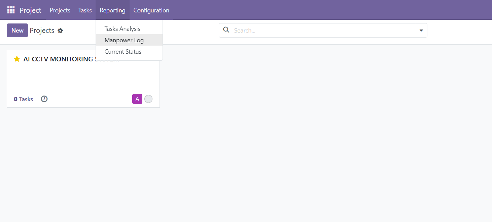

Dedicated Reporting Menu
Access manpower reports directly from the Reporting menu for quick navigation and easy workforce monitoring.

Employee Status Indicator
The status button in the top navigation instantly displays whether the current employee is On Duty or Off Duty. Switch status with a single click.